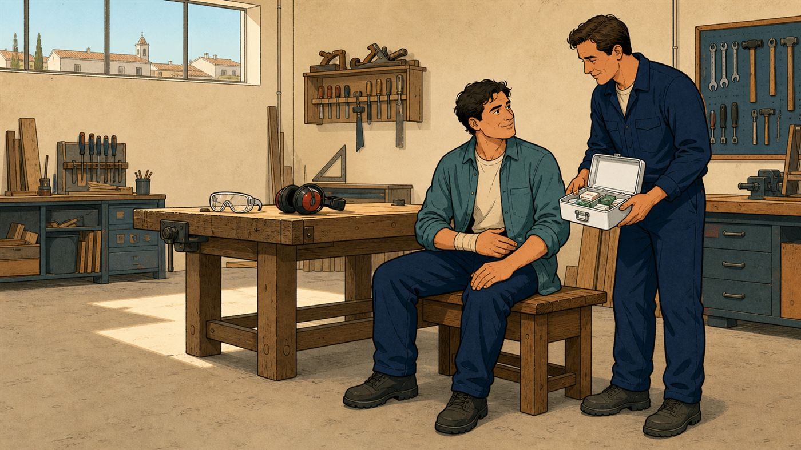

Multirriscos empresarial
O equivalente ao multirriscos habitação, para o negócio. Com uma diferença: aqui há uma cobertura que decide se a empresa reabre.
O que pode incluir
Não é só o que arde.
É o que deixa de vender.
Um multirriscos empresarial protege as instalações, o equipamento e as existências. A cobertura que faz a diferença real é outra: as perdas de exploração, que compensam o lucro que o negócio deixa de gerar enquanto está parado — e os encargos fixos que continuam a vencer-se.
- Incêndio, raio e explosão. A base do contrato. Cobre o edifício, se for seu, e o recheio em qualquer caso.
- Danos por água. Roturas, infiltrações e os estragos em equipamento e mercadoria.
- Fenómenos da natureza. Tempestades, cheias e granizo. Relevante em instalações térreas e zonas ribeirinhas.
- Furto, roubo e vandalismo. Existências, equipamento e dinheiro em caixa, com sublimites próprios.
- Quebra de vidros e reclamos. Montras, vitrinas e letreiros exteriores.
- Equipamento electrónico. Computadores, terminais de pagamento e sistemas de gestão, incluindo danos eléctricos.
- Deterioração de bens refrigerados. Essencial em restauração e comércio alimentar, quando falha a energia ou o equipamento.
- Perdas de exploração. Compensa o lucro cessante e os encargos fixos durante o período de paragem após um sinistro coberto.

Sem letra pequena
Onde acaba
a cobertura.
Uma leitura geral, para ter ideia clara antes da conversa. Cada apólice tem as suas condições — e é por isso que as lemos consigo, uma a uma.
Normalmente coberto
- Incêndio, raio e explosão nas instalações e no recheio.
- Danos por água e fenómenos da natureza, quando contratados.
- Furto, roubo e vandalismo, dentro dos capitais declarados.
- Equipamento e existências, pelo valor declarado à seguradora.
- Perdas de exploração, se a cobertura tiver sido contratada.
- Remoção de escombros e despesas de salvamento.
Normalmente excluído
- Existências não declaradas ou acima do capital contratado.
- Actividade diferente da declarada na apólice.
- Desgaste e avaria mecânica sem causa externa.
- Instalações eléctricas não certificadas ou fora de norma.
- Mercadoria à guarda de terceiros, salvo cobertura específica.
- Danos por falta de manutenção de coberturas e canalizações.
Lista indicativa e de carácter geral. As coberturas e exclusões concretas são as que constarem das condições gerais, especiais e particulares da apólice que vier a subscrever.
Para quem
Situações que
vemos todas as semanas.
Café ou restaurante
Deterioração de bens refrigerados, quebra de vidros, responsabilidade civil e perdas de exploração. Um congelador avariado num fim-de-semana prolongado dá prejuízo real.
Escritório ou consultório
O valor está no equipamento electrónico e nos dados. Vale a pena olhar para danos eléctricos e para a reposição rápida de sistemas.
Armazém ou oficina
Existências e máquinas dominam o capital. A avaria de máquinas costuma ser cobertura autónoma e não está incluída por defeito.
Perguntas frequentes
O que nos
perguntam ao balcão.
O que são perdas de exploração?
É a cobertura que compensa o lucro que a empresa deixa de gerar enquanto está parada após um sinistro coberto, e os encargos fixos que continua a pagar: rendas, salários, prestações.
É a diferença entre reabrir dentro de um mês e não reabrir de todo. Raramente está contratada.
Sou arrendatário. Tenho de segurar o edifício?
O edifício é, em regra, responsabilidade do senhorio. O recheio, o equipamento, as existências e as benfeitorias que fez são seus, e é isso que tem de segurar.
Confirmamos no contrato de arrendamento quem segura o quê, para não haver duplicação nem vazio.
Como declaro o valor das existências?
Pelo custo de aquisição ou de produção, não pelo preço de venda. Se o stock varia muito ao longo do ano, há apólices com capital variável ou declarações periódicas.
A avaria de máquinas está incluída?
Normalmente não. É uma cobertura autónoma, especialmente relevante em oficinas e indústria, onde uma máquina parada trava toda a produção.
O que acontece se declarar capital a menos?
Aplica-se a regra proporcional: a seguradora indemniza na proporção entre o capital declarado e o valor real. Segurar metade significa receber metade, mesmo num sinistro pequeno.
Uma revisão completa
do património do negócio.
Instalações, equipamento, existências e o tempo de paragem que consegue suportar. Sem custo e sem compromisso.
Sem compromisso. Não usamos os seus dados para mais nada.